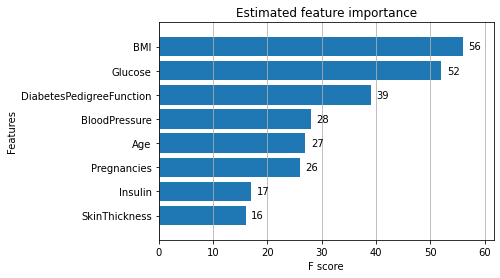
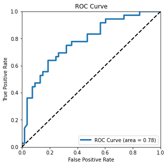

Dask for Predicting Onset/Diagnosis of Chronic Conditions, Diabetes¶
categories: [Big Data]
Credit: http://matthewrocklin.com/blog/work/2017/03/28/dask-xgboost, https://examples.dask.org/applications/forecasting-with-prophet.html¶
import dask
from dask.distributed import Client, progress
from dask.distributed import Client
client = Client(n_workers=4)
client
Client
|
Cluster
|
import pandas as pd
url = 'https://raw.githubusercontent.com/davidrkearney/colab-notebooks/main/datasets/diabetes.csv'
df = pd.read_csv(url, error_bad_lines=False)
df
| Pregnancies | Glucose | BloodPressure | SkinThickness | Insulin | BMI | DiabetesPedigreeFunction | Age | Outcome | |
|---|---|---|---|---|---|---|---|---|---|
| 0 | 6 | 148 | 72 | 35 | 0 | 33.6 | 0.627 | 50 | 1 |
| 1 | 1 | 85 | 66 | 29 | 0 | 26.6 | 0.351 | 31 | 0 |
| 2 | 8 | 183 | 64 | 0 | 0 | 23.3 | 0.672 | 32 | 1 |
| 3 | 1 | 89 | 66 | 23 | 94 | 28.1 | 0.167 | 21 | 0 |
| 4 | 0 | 137 | 40 | 35 | 168 | 43.1 | 2.288 | 33 | 1 |
| ... | ... | ... | ... | ... | ... | ... | ... | ... | ... |
| 763 | 10 | 101 | 76 | 48 | 180 | 32.9 | 0.171 | 63 | 0 |
| 764 | 2 | 122 | 70 | 27 | 0 | 36.8 | 0.340 | 27 | 0 |
| 765 | 5 | 121 | 72 | 23 | 112 | 26.2 | 0.245 | 30 | 0 |
| 766 | 1 | 126 | 60 | 0 | 0 | 30.1 | 0.349 | 47 | 1 |
| 767 | 1 | 93 | 70 | 31 | 0 | 30.4 | 0.315 | 23 | 0 |
768 rows × 9 columns
from dask import dataframe as dd
ddf = dd.from_pandas(df, npartitions=5)
ddf
Dask DataFrame Structure:
| Pregnancies | Glucose | BloodPressure | SkinThickness | Insulin | BMI | DiabetesPedigreeFunction | Age | Outcome | |
|---|---|---|---|---|---|---|---|---|---|
| npartitions=5 | |||||||||
| 0 | int64 | int64 | int64 | int64 | int64 | float64 | float64 | int64 | int64 |
| 154 | ... | ... | ... | ... | ... | ... | ... | ... | ... |
| ... | ... | ... | ... | ... | ... | ... | ... | ... | ... |
| 616 | ... | ... | ... | ... | ... | ... | ... | ... | ... |
| 767 | ... | ... | ... | ... | ... | ... | ... | ... | ... |
Dask Name: from_pandas, 5 tasks
import dask.dataframe as dd
# Subset of the columns to use
cols = ['Pregnancies', 'Glucose', 'BloodPressure', 'SkinThickness',
'Insulin', 'BMI', 'DiabetesPedigreeFunction', 'Age']
ddf2 = ddf.sample(frac=0.2) # XGBoost requires a bit of RAM, we need a larger cluster
ddf2
Dask DataFrame Structure:
| Pregnancies | Glucose | BloodPressure | SkinThickness | Insulin | BMI | DiabetesPedigreeFunction | Age | Outcome | |
|---|---|---|---|---|---|---|---|---|---|
| npartitions=5 | |||||||||
| 0 | int64 | int64 | int64 | int64 | int64 | float64 | float64 | int64 | int64 |
| 154 | ... | ... | ... | ... | ... | ... | ... | ... | ... |
| ... | ... | ... | ... | ... | ... | ... | ... | ... | ... |
| 616 | ... | ... | ... | ... | ... | ... | ... | ... | ... |
| 767 | ... | ... | ... | ... | ... | ... | ... | ... | ... |
Dask Name: sample, 10 tasks
diab_diag = (ddf.Outcome) # column of labels
del ddf['Outcome'] # Remove delay information from training dataframe
ddf, diab_diag = dask.persist(ddf, diab_diag) # start work in the background
diab_diag.head()
0 1
1 0
2 1
3 0
4 1
Name: Outcome, dtype: int64
df2 = dd.get_dummies(ddf.categorize()).persist()
len(df2.columns)
8
data_train, data_test = df2.random_split([0.9, 0.1],
random_state=1234)
labels_train, labels_test = diab_diag.random_split([0.9, 0.1],
random_state=1234)
%%time
import dask_xgboost as dxgb
params = {'objective': 'binary:logistic', 'nround': 1000,
'max_depth': 16, 'eta': 0.01, 'subsample': 0.5,
'min_child_weight': 1, 'tree_method': 'hist',
'grow_policy': 'lossguide'}
bst = dxgb.train(client, params, data_train, labels_train)
CPU times: user 1.23 s, sys: 607 ms, total: 1.84 s
Wall time: 3.56 s
bst
<xgboost.core.Booster at 0x7fde80f05f98>
import xgboost as xgb
pandas_df = data_test.head()
dtest = xgb.DMatrix(pandas_df)
bst.predict(dtest)
array([0.52612805, 0.51560616, 0.47321838, 0.5084377 , 0.45707062],
dtype=float32)
predictions = dxgb.predict(client, bst, data_test).persist()
predictions
|
from sklearn.metrics import roc_auc_score, roc_curve
print(roc_auc_score(labels_test.compute(), predictions.compute()))
0.7775157232704403
import matplotlib.pyplot as plt
fpr, tpr, _ = roc_curve(labels_test.compute(), predictions.compute())
# Taken from
# http://scikit-learn.org/stable/auto_examples/model_selection/plot_roc.html#sphx-glr-auto-examples-model-selection-plot-roc-py
plt.figure(figsize=(8, 8))
lw = 2
plt.plot(fpr, tpr, color='darkorange', lw=lw, label='ROC curve')
plt.plot([0, 1], [0, 1], color='navy', lw=lw, linestyle='--')
plt.xlim([0.0, 1.0])
plt.ylim([0.0, 1.05])
plt.xlabel('False Positive Rate')
plt.ylabel('True Positive Rate')
plt.title('Receiver operating characteristic example')
plt.legend(loc="lower right")
plt.show()

import dask
import xgboost
import dask_xgboost
%matplotlib inline
import matplotlib.pyplot as plt
ax = xgboost.plot_importance(bst, height=0.8, max_num_features=9)
ax.grid(False, axis="y")
ax.set_title('Estimated feature importance')
plt.show()

y_hat = dask_xgboost.predict(client, bst, data_test).persist()
y_hat
|
from sklearn.metrics import roc_curve
labels_test, y_hat = dask.compute(labels_test, y_hat)
fpr, tpr, _ = roc_curve(labels_test, y_hat)
from sklearn.metrics import auc
fig, ax = plt.subplots(figsize=(5, 5))
ax.plot(fpr, tpr, lw=3,
label='ROC Curve (area = {:.2f})'.format(auc(fpr, tpr)))
ax.plot([0, 1], [0, 1], 'k--', lw=2)
ax.set(
xlim=(0, 1),
ylim=(0, 1),
title="ROC Curve",
xlabel="False Positive Rate",
ylabel="True Positive Rate",
)
ax.legend();
plt.show()
